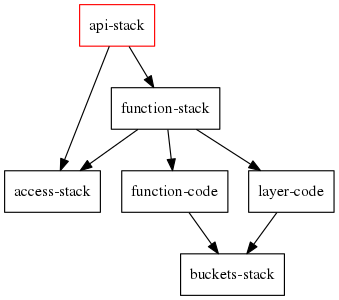
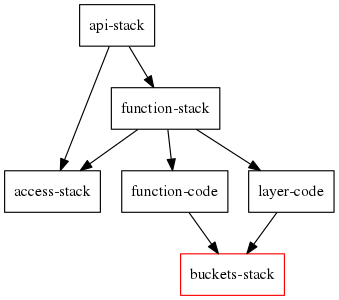

class: center, middle # Distmono Better way to deploy to AWS --- # Before we begin Everything in [github.com/bachew/distmono](https://github.com/bachew/distmono) Slides made with [github.com/gnab/remark](https://github.com/gnab/remark) --- # What is the problem? -- Let's begin with a simple and common use case:  --- # Config-centric deployment The promises of config-centric deployment: -- - Easy to configure: ```yaml namespace: ${namespace} stacks: - name: api template_path: templates/api.yaml ``` -- - A command to deploy everything: ```bash $ stacker build env.yaml config.yaml ``` -- - Another command to undeploy all: ```bash $ stacker destroy env.yaml config.yaml ``` --- # Actually it doesn't work --  Remember function code comes from a S3 bucket? -- The order of work should be: 1. Deploy only `CodeBucket` -- 2. Package code zip and upload to `CodeBucket` -- 3. Deploy the rest -- Changes required... --- # Config changes Split template into 2: ```yaml namespace: ${namespace} stacks: - name: api template_path: templates/api.yaml variables: CodeBucket: ${output code-bucket::Bucket} CodeKey: ${output code-bucket::Key} - name: code-bucket template_path: templates/code-bucket.yaml ``` --- # Deployment script changes ```bash # Deploy code bucket first stacker build env.yaml config.yaml -t code-bucket ``` -- ```bash # Zip function code and upload to the bucket cd code zip ../code.zip * cd .. code_bucket="$(./get-code-bucket)" # Cannot use same filename if you want CloudFormation to update the function code_zip="$(sha256sum code.zip).zip" code_s3_path="s3://$code_bucket/$code_zip" aws s3 cp code.zip "$code_s3_path" ``` -- ```bash # Deploy api template to use the uploaded code ./update-env-code-zip env.yaml "$code_s3_path" stacker build env.yaml config.yaml -t api ``` --- # It's a problem -- Remember this is a very simple use case -- What happens if it's 20x more complex? -- Deployment is slow, cannot deploy only updated parts -- Development will also be slow -- The scripts are not reusable, i.e. you create another API -- Rewriting scripts with Python helps, but not for long --- # Pythonic deployment -- The opposite of config-centric deployment -- Configuration only on the highest level, even that can be dynamic -- Any "script" written can easily be packaged as library and reused --- # Let's start ```bash # Clone the repo and create virtual env $ git clone git@github.com:bachew/distmono.git $ cd distmono $ bin/dmn --help # first run creates virtual env, takes < 20s ``` -- ```bash # Configure AWS credentials $ cat > env.sh export AWS_ACCESS_KEY_ID="xxxxxxxxxxxxxxxxxxxx" export AWS_SECRET_ACCESS_KEY="xxxxxxxxxxxxxxxxxxxxxxxxxxxxxxxxxxxxxxxx" ``` -- ```bash # Clone config and customize $ cd project-env $ cp api.py api-demo.py $ edit api-demo.py # more on config next slide $ cd .. ``` -- ```bash # Deploy, takes roughly 3 minutes $ bin/dmn -p project-env/api-demo.py build ``` --- # Configuration Let's take a closer look at `project-env/api-demo.py` -- ```python def get_project(): return ApiProject(env=get_env()) ``` `ApiProject` class decides what and how to build -- ```python def get_env(): return { 'namespace': 'ew1-distmono-demo', 'region': 'eu-west-1', } ``` - Environment is a "configuration" for a project -- - A project can have multiple environments - E.g. one env for each developer --- # Project A project consists of deployables and their dependencies. ```python class ApiProject(Project): def get_deployables(self): return { 'api-stack': ApiStack, 'function-stack': FunctionStack, 'function-code': FunctionCode, 'layer-code': LayerCode, 'buckets-stack': BucketsStack, 'access-stack': AccessStack, } def get_dependencies(self): return { 'api-stack': ['function-stack', 'access-stack'], 'function-stack': ['function-code', 'layer-code', 'access-stack'], 'function-code': 'buckets-stack', 'layer-code': 'buckets-stack', 'buckets-stack': 'access-stack', } ``` --- # Dependencies <table><tr> <td></td> <td style="vertical-align:top"> <ol> <li>Target is api-stack</li> </ol> </td> </tr></table> --- # Dependencies <table><tr> <td></td> <td style="vertical-align:top"> <ol> <li>Target is api-stack</li> <li>But starts from bottom, deploy <code>CodeBucket</code></li> </ol> </td> </tr></table> --- ```bash # Takes roughly 2 minutes $ bin/dmn -p project-env/api-demo.py destroy ```